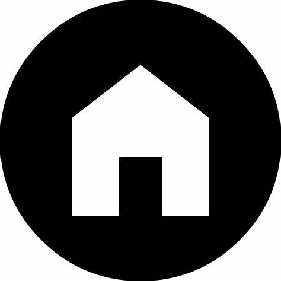

Bienvenue dans mon portfolio créatif, un espace où l'art et l'innovation se rencontrent pour raconter mon parcours professionnel. Chaque projet que vous découvrirez ici est le fruit d'une passion dévorante pour l'expression visuelle et la résolution créative de problèmes. Explorez ces pages et plongez dans l'univers de mes réalisations, où chaque ligne de code et chaque idée fusionnent pour former un ensemble harmonieux. Que vous soyez ici par curiosité, par collaboration potentielle ou simplement par amour de l'informatique, je vous invite à vous immerger dans ce portfolio qui reflète ma dévotion envers l'excellence et l'originalité. Bienvenue ! où chaque projet est une histoire captivante à partager.
Je suis Louati Amin, un technicien superieur et futur ingenieur passionné par l'informatique. J'ai toujours été fasciné par la technologie et je suis toujours à la recherche de nouvelles façons de créer des expériences numériques innovantes. Dans mon portfolio, vous trouverez des exemples de mon travail dans [domaine d'expertise]. Je suis fier(e) de mes réalisations et j'espère que vous apprécierez mes projets.
je suis un technicien superieur en genie électrique specialitée automatique et informatique industrielle a Faculte de science bizerte , et un futur ingenieur en informatique a ESPRIT